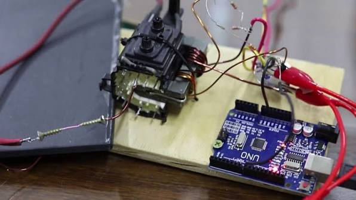
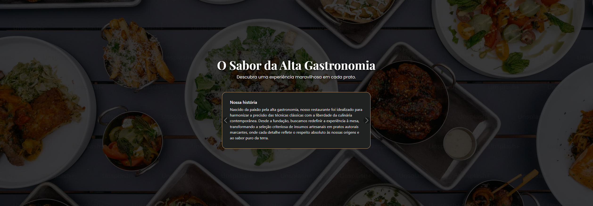
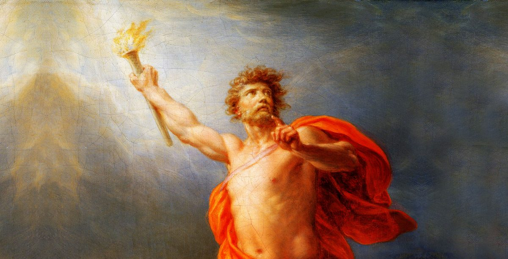
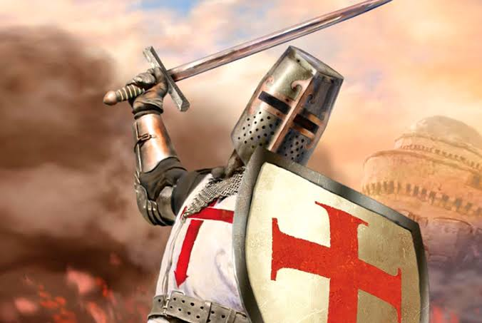
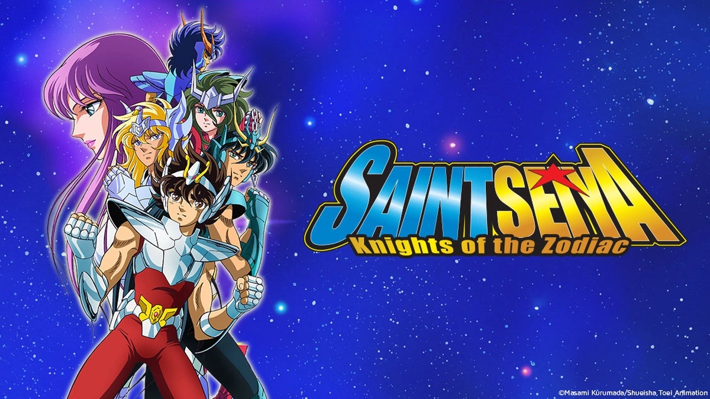

Bobina de Tesla musical com Arduino
Desenvolvi junto do meu grupo, uma versão acessível de uma Bobina de Tesla musical para a EXPOETE, que gerava som diretamente do plasma do arco elétrico. Usei um transformador flyback para elevar a tensão e um Arduino Uno para controlar a frequência das faíscas. Com isso, o plasma aquecia o ar e reproduzia músicas como o tema do Super Mario sem precisar de alto-falantes.

Site sobre um Restaurante Gourmet
Para testar minhas habilidades em HTML, CSS e Bootstrap, criei um site responsivo focado na temática de um restaurante gourmet. O objetivo era estruturar uma interface completa atendendo a todos os requisitos propostos no exercício. O resultado final ficou funcional, atendeu a todas as exigências e foi aprovado com sucesso.

Prometeu Acorrentado
Um dos meus primeiros projetos foi uma apresentação sobre a peça "Prometeu Acorrentado", contando a história do titã que deu o fogo à humanidade. Mesmo enfrentando alguns problemas técnicos no dia do evento, consegui conduzir tudo muito bem e a apresentação terminou sob bastante aplausos do público.

As Cruzadas
Neste projeto de história, trabalhei em equipe para apresentar a trajetória das Cruzadas, com um foco especial na Terceira Cruzada. Por ser um trabalho em grupo mais elaborado e bem alinhado, conseguimos entregar uma apresentação ainda melhor do que as anteriores, sendo muito elogiada por todos.

Powerpoint - Cavaleiros dos Zodiaco
Foi a minha primeira apresentação do ano e também a estreia mexendo no PowerPoint, onde escolhi falar sobre o anime Cavaleiros do Zodíaco. Embora tenha cometido alguns erros comuns no início, como colocar texto demais nos slides, consegui me comunicar bem e a experiência foi um aprendizado valioso para o meu crescimento.